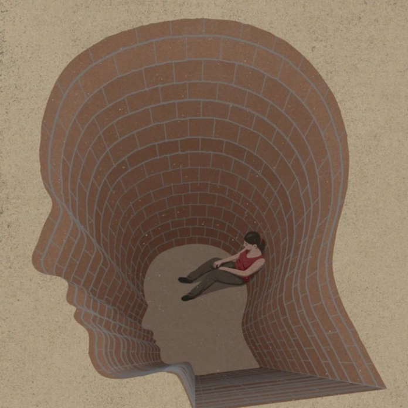

Фритрек и нулевой спринт: Подготовка к работе

<Дискомфорт, сомнение>
Это было самое начало пути. На этом этапе важно было проникнуться основами и настроиться на учёбу. И, возможно, подумать, как новые знания могут повлиять на ваше будущее.
«В начале меня раздирали вдохновение и страх. Я видел, как знания могут изменить будущее, но сомнение шептало: "Вдруг не получится? Вдруг бросишь?" Это сжимало изнутри. Но я решил попробовать, поняв: страх — это нормально, когда делаешь первый шаг».